TDD in the AI EraBarry S. StahlSolution Architect & DeveloperMicrosoft .NET MVPPhysics & Math Nerd@bsstahl@cognitiveinheritance.comhttps://CognitiveInheritance.com |
Favorite Physicists & Mathematicians
Favorite Physicists
Other notables: Stephen Hawking, Edwin Hubble, Leonard Susskind, Christiaan Huygens |
Favorite Mathematicians
Other notables: Daphne Koller, Grady Booch, Leonardo Fibonacci, Evelyn Berezin, Benoit Mandelbrot |
Fediverse Supporter
|

|
Some OSS Projects I Run
- Liquid Victor : Media tracking and aggregation [used to assemble this presentation]
- Prehensile Pony-Tail : A static site generator built in c#
- TestHelperExtensions : A set of extension methods helpful when building unit tests
- Conference Scheduler : A conference schedule optimizer
- IntentBot : A microservices framework for creating conversational bots on top of Bot Framework
- LiquidNun : Library of abstractions and implementations for loosely-coupled applications
- Toastmasters Agenda : A c# library and website for generating agenda's for Toastmasters meetings
- ProtoBuf Data Mapper : A c# library for mapping and transforming ProtoBuf messages
http://GiveCamp.org

Achievement Unlocked

The Abstraction Ladder
|
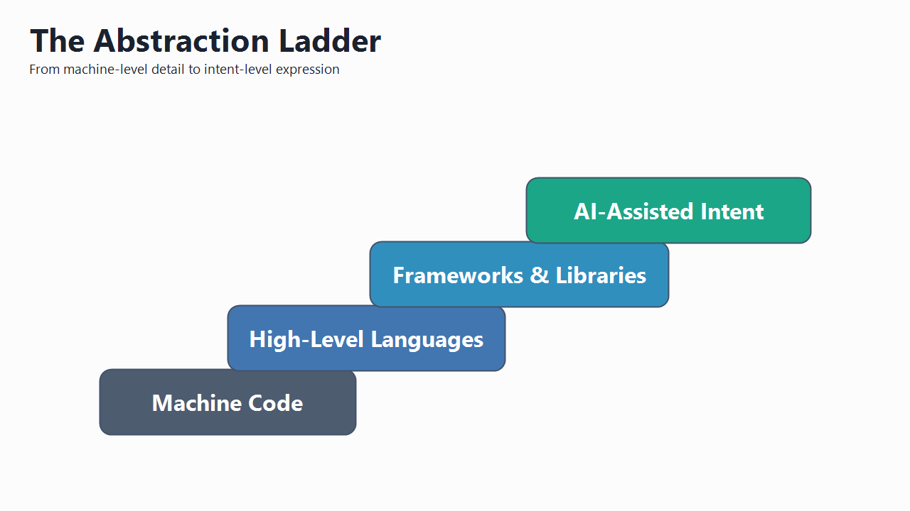 |
Raised Abstraction Requires Judgment
|
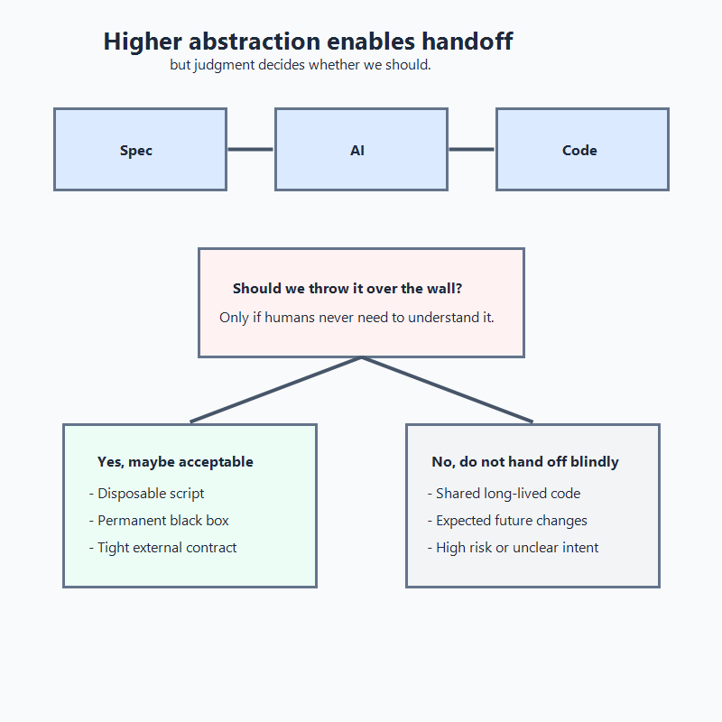 |
Principle - Simplest Thing First
|

|
The Simplest Thing, Then Refactor
|
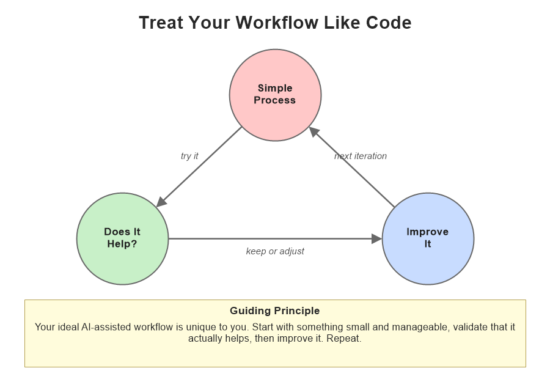 |
Theory of Constraints
|
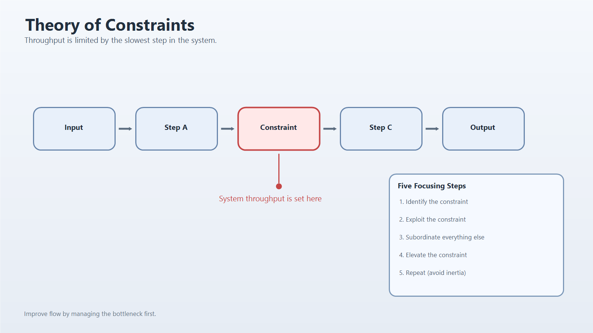 |
Human-AI Adoption Patterns
Research: Barke et al. (2023); Nair et al. (2023); Chen et al. (2021). |
Red-Green-Refactor Defines AI Scope
|
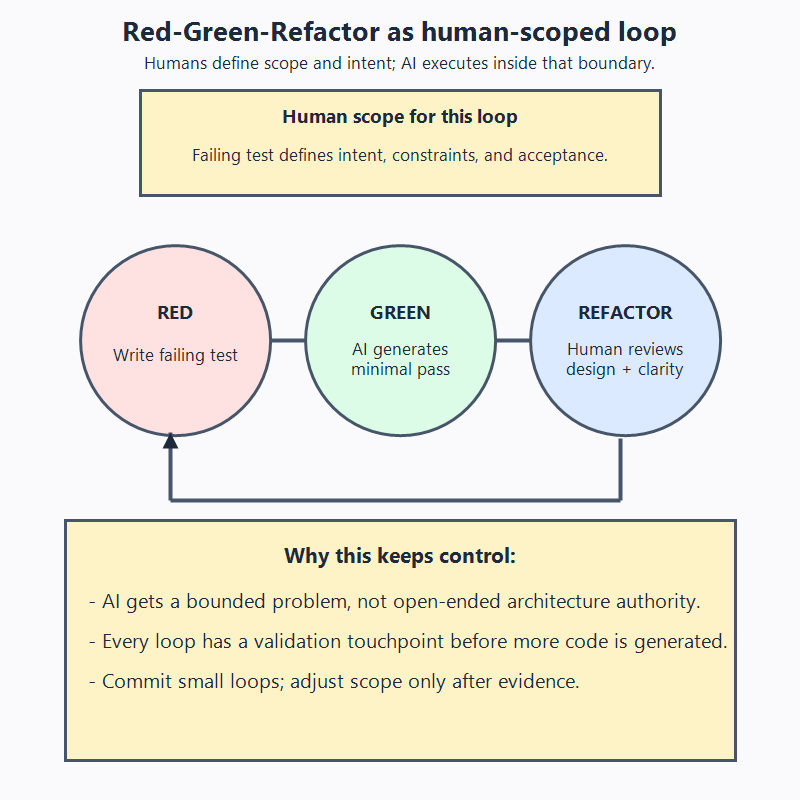 |
AI as a Pairing Partner
|
Coupling and Cohesion
|
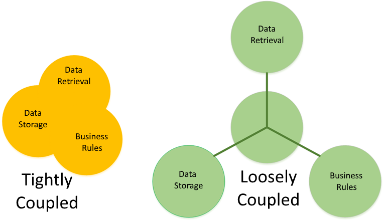 |
The Facade Family of Patterns
|
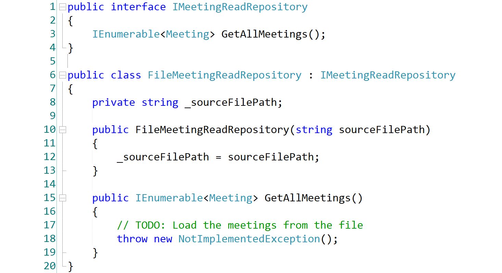 |
Tests Matter More Than the Code
Key takeaways - If the tests are right, the code can be anything - If the tests are wrong or missing, the code can't be trusted |
Validate Tests with Mutations
|
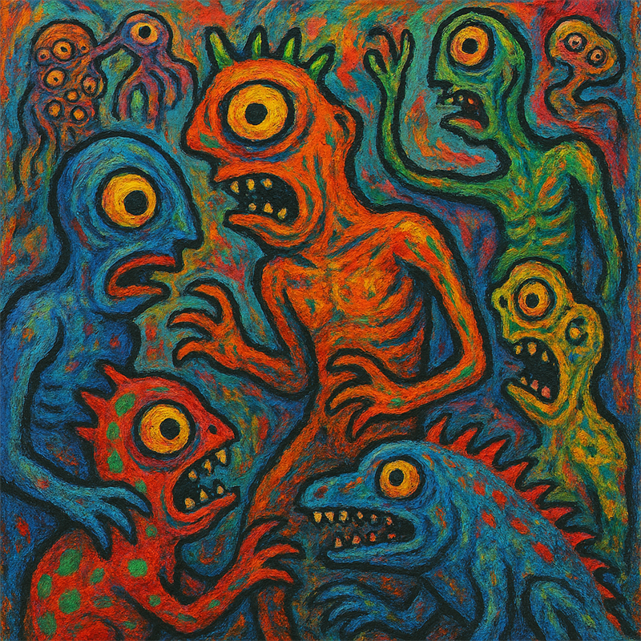 |
Mutation Testing in the AI Era
|
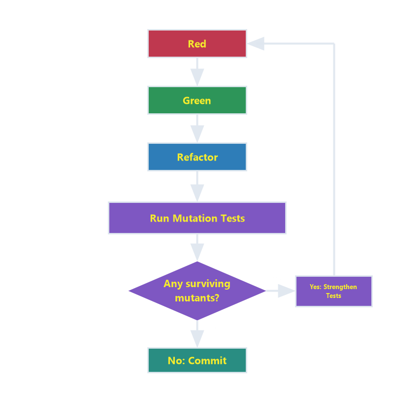 |
Some Types of Mutations
|
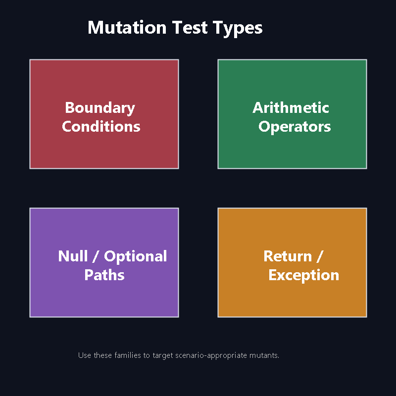 |
Mutation Test Prompts
|
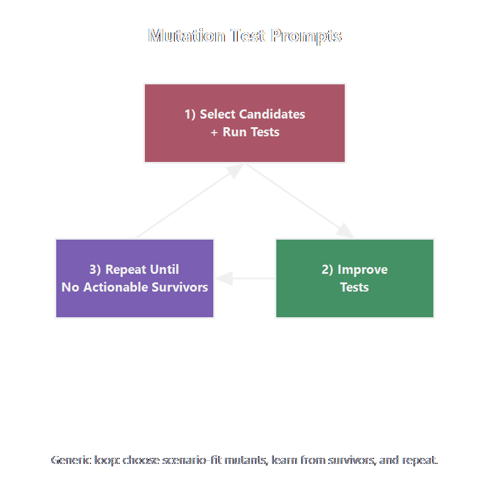 |